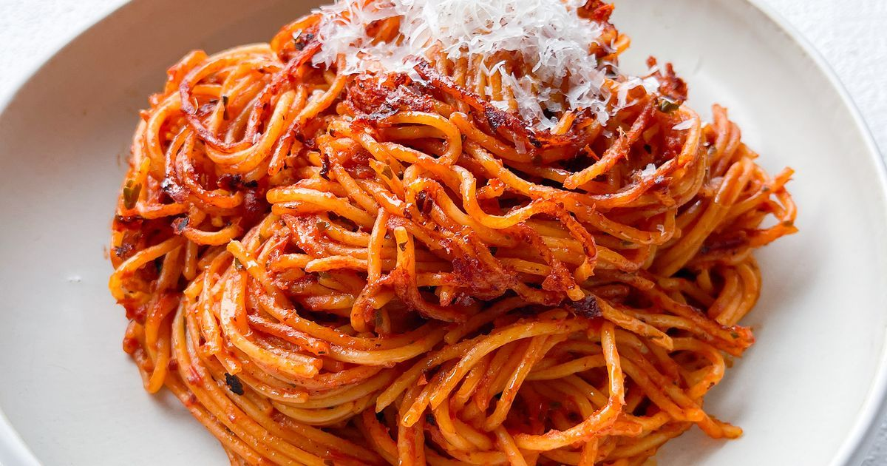

Spaghetti

Description
Spaghetti is a long, thin, solid, cylindrical pasta that is a staple of
Italian cuisine. It's made from durum wheat semolina and water. Often
served with tomato sauce, meat, or vegetables, spaghetti is a versatile
pasta shape. The name "spaghetti" comes from the Italian word "spago,"
meaning "string," reflecting its long, thin shape.
Ingredients
- Spaghetti (about 200-250g for 2 servings)
- Olive oil (1-2 tablespoons for sautéing)
- Garlic (2-3 cloves, minced)
- Canned tomatoes (1 can, 400g, or fresh tomatoes if preferred)
- Tomato paste (1-2 tablespoons, optional for a richer sauce)
-
Basil (fresh or dried, 1-2 teaspoons dried or a handful of fresh leaves)
- Oregano (1 teaspoon dried)
- Red pepper flakes (optional, for a bit of heat)
- Salt (to taste)
- Black pepper (to taste)
- Sugar (a pinch, optional to balance acidity)
- Parmesan cheese (grated, for topping)
- Fresh parsley (optional, for garnish)
Steps
- Bring a large pot of salted water to a boil.
-
Add the spaghetti and cook according to package instructions (usually
about 8-10 minutes).
-
Drain the spaghetti and set aside, reserving a little pasta water for
the sauce if needed.
- Heat olive oil in a large pan over medium heat.
- Add the minced garlic and sauté for 1-2 minutes until fragrant.
-
Add the canned tomatoes (crushed or whole, which you can crush with a
spoon) along with the tomato paste if using.
-
Stir in the dried oregano, basil, and a pinch of sugar (to balance the
acidity of the tomatoes).
-
Let the sauce simmer for 15-20 minutes, stirring occasionally. If the
sauce thickens too much, you can add a little pasta water to reach your
desired consistency.
-
Season with salt and pepper to taste. You can also add red pepper flakes
if you want a little heat.
-
Toss the cooked spaghetti in the marinara sauce until well coated.
-
Let it simmer together for a couple of minutes for the flavors to meld.
-
Plate the spaghetti, top with grated Parmesan cheese, and garnish with
fresh parsley if desired.